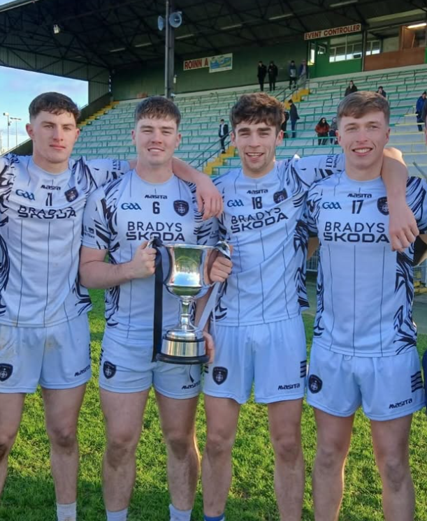
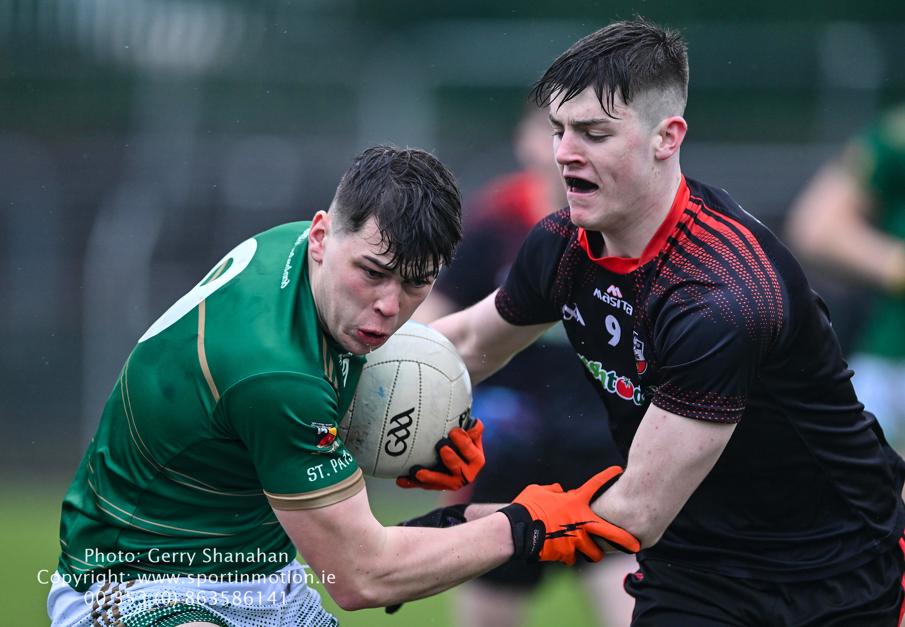
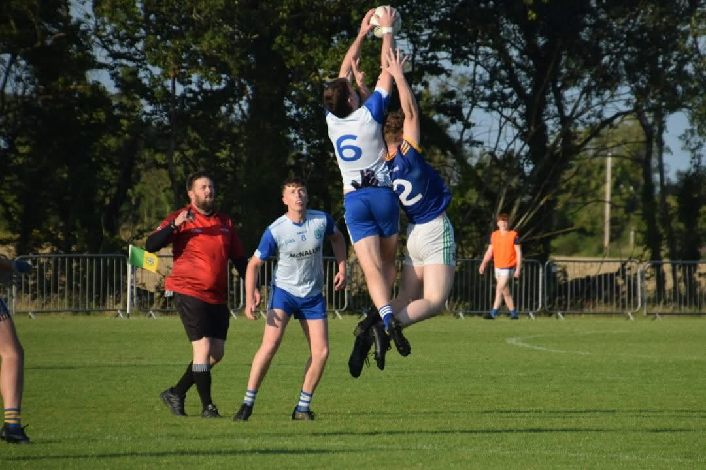
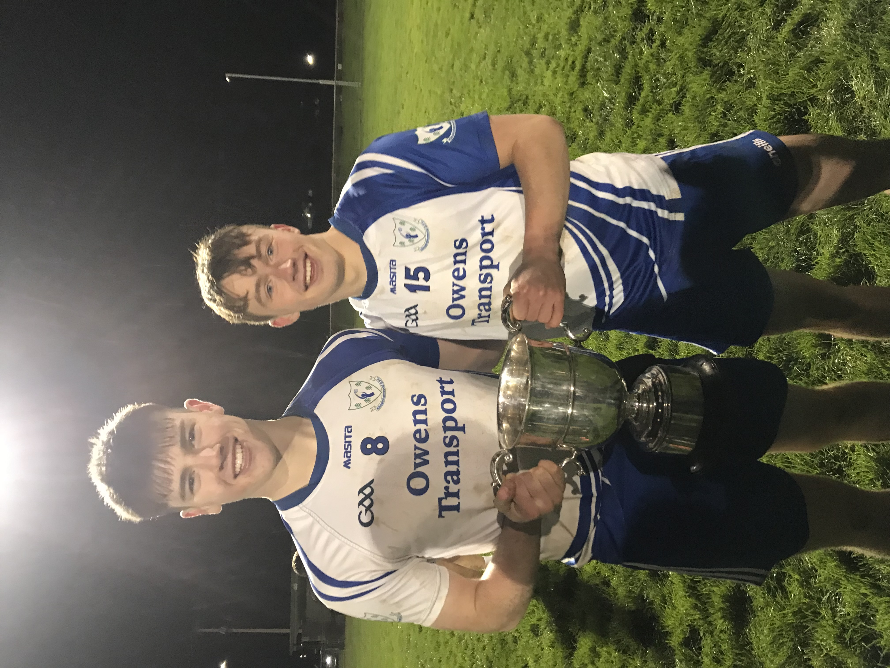

Kilmainhamwood GAA
A lifelong player, now a minor coach — and a small part of keeping a small club fielding its own team.
Playing career
I've played Gaelic football all my life with Kilmainhamwood GAA. It's given me some of the proudest moments outside engineering — captaining the minor team to the Division 4 Championship in 2020, and a school run in 2022 that went further than I expected: North Leinster Schools C Champions, then Leinster Schools C Champions, before finishing as All-Ireland Schools C Championship finalists. More recently, I picked up the Meath Regional Football Championship in 2025, and I also captained the adult team through 2021–2022, where I focused on motivating players, introducing structured training drills, and grew our attendance by 15%.
📰 Regional FC round up — HoganStandTaking on the minor coaching role
This year I took on the mantle of minor coach — my first year properly on the other side of the game. Coaching has taught me things playing never did: you start to see shape, spacing, and decision-making as patterns rather than moments, and you notice how much of a young player's game is confidence rather than raw ability. Guiding a group through that shift, rather than just playing through it myself, has been the real learning curve. It paid off this year with the Minor Division 4 League title in 2026.
📰 MFL Div 5 final: Burns inspires as 'Wood' leave it late — HoganStandWhy a small club fielding its own team matters
Kilmainhamwood is a small club, and this year our minor team has been able to go out on our own — without amalgamating with other clubs just to have enough numbers for a team. That matters more than it might sound: amalgamation can be a practical necessity for small clubs, but it also means players lose the identity of playing for their own parish, and it's often a sign a club's underage structure is shrinking. Being able to stand on our own says something real about where the club is right now.
That's a big part of why I coach — bringing lads on and encouraging better numbers coming through, so fielding our own team stays possible rather than becoming the exception.
📰 ADD ARTICLE LINK


